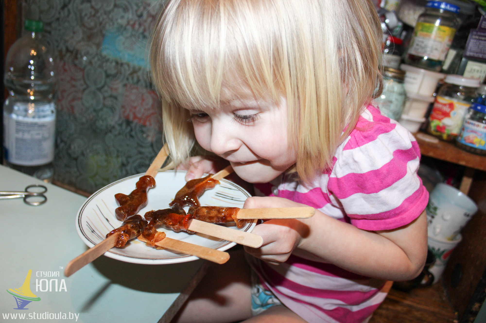

Да все проще простого) Жизнь, конечно, не разделишь на черное и белое, но всегда хочется какой-то определенности. Ежедневная работа родителями очень важна, важнее всего на свете! Важнее карьеры, мыслей других людей в стиле «что скажут люди», модной одежды, крутой машины...Мы делаем новых людей, дело очень ответственное и кропотливое)
Найти бы только в себе сил и позитива, чтоб работать качественно и регулярно) Самому анализировать себя и понимать, что тоже надо меняться и что мы тоже иногда не правы.Наблюдая за детьми вывела некую необходимую последовательность поведения взрослых, необходимого, чтоб научить детей самоконтролю.
Первое, не запрещать. Не стоит запрещать делать 100 % всего на свете. Хотите вы того или нет, у каждого есть свои интересы и потребности, которые человек будет пытаться удовлетворить. Запретом мы вызываем протест, а не осмысленность в действиях. Как в анекдоте «Пойду на зло мамке голову отморожу»))))))
Второе, озвучить правила. Существуют лишь несколько процентов того, что действительно нельзя. Обсудите эти правила, ребенок их должен знать и выполнять.
Третье, пройти цепочку - сорвало крышу-анализ ситуации- позитивное обсуждение вместе. Самый интересный пункт. К слову, о том, что доступные вещи вызывают у нас меньше энтузиазма, чем запретные. Так уж мы устроены) Представьте, что ребенок очень любит конфеты. Как думаете сколько он сможет их съесть?) В моем эксперименте получилось ,что 4 )) Хотя был позволен килограмм)))) Если бы все таки «крышу сорвало» и килограмм кончился, дальше последовали бы аллергия, боль в животе, например, и прочие радости. А после, интересный прямой вопрос «Как думаешь, можно ли есть так много? А почему?» Главное без угроз, без « я же говорила», пошутить и пожалеть)))) Мысль рожденная нашей головой всегда самая желанная) Помогайте рождать детям мысли, а не вкладывайте свои)
И последнее , барабанная дробь , готово! Вот вам и человек, который сам себя контролирует, принимает решения, сам и несет за них ответственность. Малыми шагами, вроде незначительными действиями на первый взгляд, делаются вот такие большие дела!
Текст и фото Юля Воробьева.